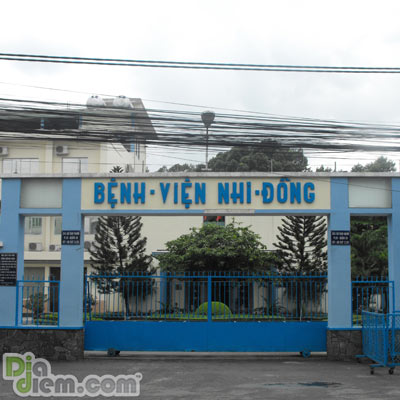

Thứ hai, 14 Tháng 3 2011 09:03 GMT +7
Thiết bị chữa điếc có giá 15.000 ÚD lần đầu tiên được các bác sĩ Bệnh viện Nhi Đồng 1, TP HCM cấy vào tai hai bé bị điếc bẩm sinh. Đặc biệt từ nay đến cuối năm, phụ huynh có nhu cầu chữa cả hai cho trẻ chỉ phải trả nửa tiền.
Bác sĩ Đặng Hoàng Sơn, Trưởng khoa Tai Mũi Họng, Bệnh viện Nhi Đồng 1 cho biết, cấy ốc tai điện tử hiện là phương pháp hữu hiệu nhất giúp trẻ bị điếc bẩm sinh có thể nghe được.
Do là lần thực hiện đầu tiên, bé trai 2 tuổi và bé gái 6 tuổi ngụ tại TP HCM được ưu tiên chữa trị miễn phí. Trước đó, cả hai cùng được chẩn đoán điếc bẩm sinh.
"Với thiết bị này, sau khi cấy, các bé có thể nghe thấy ngay các âm thanh. Tuy nhiên phải mất khoảng 6 tháng tập luyện, các bé mới quen dần và có thể nói", ông Sơn cho biết.

Cũng theo bác sĩ Sơn, cấy ốc tai điện tử đòi hỏi cả ekip bác sĩ phải được đào tạo kỹ càng. Tuy nhiên vấn đề quan trọng hơn là giá của loại thiết bị này quá cao.
"Một ốc tai loại rẻ nhất là 15.000 USD, loại đắt tiền lên đến 21.000 đô la Mỹ. Điều này khiến nhiều gia đình không có cơ hội dù công phẫu thuật chúng tôi đã hoàn toàn miễn phí. Đáng mừng là từ đây đến cuối năm, phụ huynh có con bị điếc cả hai tai cần chữa sẽ được hỗ trợ thiết bị cho một bên tai", ông Sơn nói.
Theo thống kê, lượng trẻ bị điếc bẩm sinh chiếm khoảng 5%. Trong số ấy, nhiều trẻ bị điếc hoàn toàn dẫn đến câm. Nguyên nhân thường do mẹ sử dụng thuốc trong thai kỳ, hoặc mẹ nhiễm siêu vi trùng, số khác do dị dạng bẩm sinh.
Gọi điện thoại: +84(08)9899999
Qua Email: tuvanthinhhoc@gmail.com
180-182, đường Ngô Gia Tự
Phường 9, Quận 10, Thành phố Hồ Chí Minh, Việt Nam